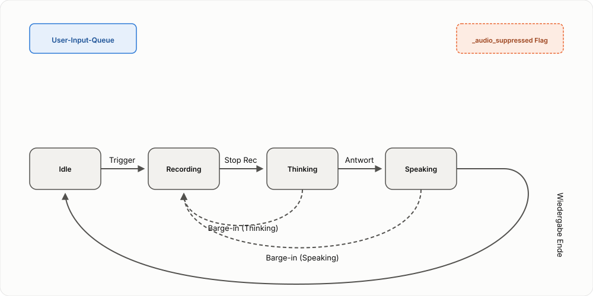

Spezifikation: Sprach-Erweiterung (STT/TTS)¶
Status: Entwurf (2026-10-02) -- Ergänzung zur docs/specs/core-text-dialog-loop.md.
Diese Spezifikation beschreibt, wie die Kern-Dialogschleife um Spracherkennung (STT) und Sprachausgabe (TTS) erweitert wird, und wie die verschiedenen Queues und Zustände dabei interagieren.
1. Erweiterte Zustände¶
Die Sprach-Erweiterung führt zwei zeitintensive Phasen ein, die das Zustandsmodell erweitern:
- Recording: Aktive Aufnahme des Nutzers (Ersatz für den instantanen Text-Input-Schritt).
- Speaking: Aktive Sprachausgabe der Agenten-Antwort (Erweiterung der Responding-Phase).
Vollständiges Zustandsdiagramm¶

- Idle --(Trigger Start)--> Recording
- Recording --(Trigger Stop)--> Thinking (Transkript -> User-Input-Queue)
- Thinking --(Antwort bereit)--> Speaking (Antwort -> TTS-Output-Queue)
- Speaking --(Wiedergabe fertig)--> Idle
2. Die Queues im Sprach-Modus¶
Es gibt nun zwei interagierende Queues/Steuerungsmechanismen:
- User-Input-Queue: (siehe Core Text Model) Hält die zu verarbeitenden Texte.
- TTS-Ausgabe: Da die Sprachausgabe blockierend erfolgt, wirkt sie als "Bremse" für den Responder-Loop.
3. Interaktionen und Events¶
Barge-in (Unterbrechung durch den Nutzer)¶
Ein Barge-in tritt auf, wenn der Nutzer den Trigger betätigt, während das System in Thinking oder Speaking ist.
Ablauf bei Barge-in:
1. Zustand: Sofortiger Wechsel nach Recording.
2. Audio-Stop: Ein Signal wird an den TTS-Daemon gesendet, um laufende Ausgaben sofort abzubrechen.
3. Audio-Suppression: Ein Flag (_audio_suppressed) wird gesetzt. Alle noch ausstehenden oder im Hintergrund fertiggestellten Turns dieses Zyklus werden nicht mehr vorgelesen.
4. Steering: Der laufende Thinking-Prozess (LLM) wird nicht abgebrochen. Er läuft im Hintergrund zu Ende und die Antwort wird im Chatverlauf (Text) hinterlegt, aber nicht gesprochen.
5. Neuer Turn: Sobald die neue Aufnahme beendet wird, landet das neue Transkript in der User-Input-Queue hinter dem (vielleicht noch laufenden) Hintergrund-Turn.
Queue-Verhalten bei Barge-in Visualisierung¶
| Zeitpunkt | System-Status | User-Input-Queue | Audio-Status |
|---|---|---|---|
| T0: Turn 1 läuft | Thinking | [ ] | Stumm (noch) |
| T1: Barge-in | Recording | [ ] | TTS Stop, Suppression=ON |
| T2: Turn 1 fertig | Recording | [ ] | Audio übersprungen (Suppression) |
| T3: Aufnahme Stop | Thinking (Turn 2) | [Transkript 2] | Suppression=OFF (für Turn 2) |
4. TTS-Daemon Queue¶
Der TTS-Daemon selbst verarbeitet Anfragen seriell. Ein speak-Kommando blockiert die Verbindung, bis die Wiedergabe fertig oder abgebrochen ist. Ein stop-Kommando über eine separate Verbindung setzt ein Event im Daemon, das die laufende Wiedergabe (meist innerhalb von < 100ms) abbricht.
Präzisierung (2026-10-03): "Seriell" heißt hier konkret nur eine
Belegt-Sperre (_claim_speaking() in tts_daemon/daemon.py) -- eine zweite
Anfrage, während schon gesprochen wird, wird sofort mit einem Fehler
abgelehnt, nicht gepuffert. Heute konkurrieren Antwort-Audio und
Denkprozess-Audio unkoordiniert um diese Sperre und können sich gegenseitig
mit verworfener (nicht nachgeholter) Audio-Ausgabe ausstechen. Die fehlende
echte Warteschlange auf App-Seite, die das behebt, sowie die zugehörige
Ordnungsinvariante zwischen STT und TTS, sind jetzt eigenständig
spezifiziert: 👉 Spezifikation: TTS-Ausgabe-Warteschlange.
5. Besonderheiten des Responder-Loops¶
Der Responder-Loop in app.py ist der zentrale Orchestrator. Er:
- Wartet auf das Ende der TTS-Wiedergabe, bevor er den nächsten Turn aus der _input_queue nimmt.
- Bricht diese Wartezeit sofort ab, wenn ein Barge-in das TTS-Signal auf stop setzt.
- Stoppt sich selbst, wenn der Zustand auf Recording wechselt, um keine Turns zu starten, während der Nutzer noch spricht.